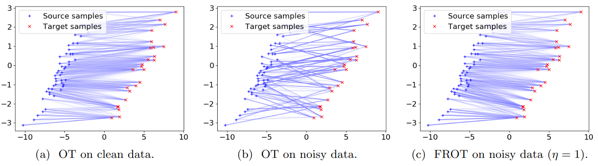
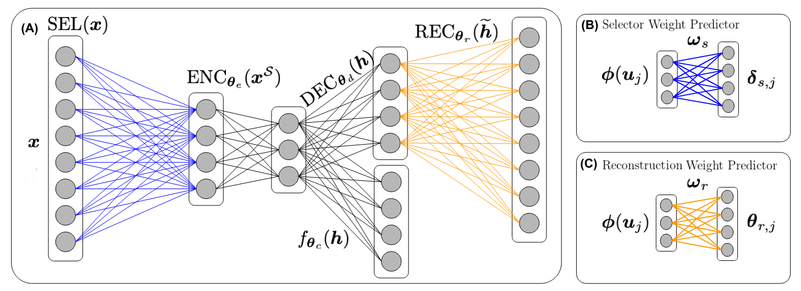
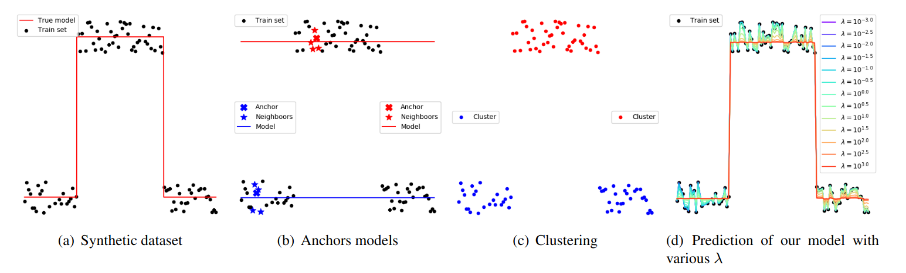
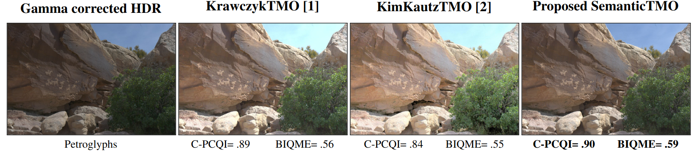

Mathis Petrovich
Senior Research Scientist at NVIDIA
NVIDIA Research · Data-Driven AI for Robotics (DAIR)
NVIDIA Switzerland AG
Europaallee 39, 8004 Zürich
Switzerland
✉ mpetrovich@nvidia.com
Personal info
✉ mathis.petrovich@gmail.com
Introduction
I am a Senior Research Scientist at NVIDIA Research in the Data-Driven AI for Robotics (DAIR) group led by Umar Iqbal, where I work on large-scale, controllable 3D human motion generation from text and kinematic constraints. Our human motion team was previously part of the Spatial Intelligence Lab (SIL). I received my ELLIS PhD from the École des Ponts ParisTech (ENPC), where I worked in the IMAGINE computer vision team. I also worked in close collaboration with the Perceiving Systems Department of Max Planck Institute for Intelligent Systems (MPI-IS). My co-advisors were Gül Varol (ENPC) and Michael J. Black (MPI) and my PhD topic was to generate realistic and diverse human body motion in a controllable way (given labels or text instructions), and to create text-motion joint latent spaces. Throughout my PhD, I interned at NVIDIA. Before my PhD, I studied at the École normale supérieure Paris-Saclay.
News
- 09/2026 I have been promoted to Senior Research Scientist at NVIDIA!
- 06/2026 ARDY and MotionBricks are accepted to SIGGRAPH 2026!
- 07/2026 Our human motion team has moved from SIL to DAIR, led by Umar Iqbal.
- 03/2026 Releasing Kimodo to the world!
- 03/2026 I am serving as an Area Chair at ECCV'26!
- 12/2025 I am honored to have received the Paris Est Sup PhD Award!
- 04/2025 My PhD thesis is online!
- 10/2024 I attended the ECCV 2024 Doctoral Consortium!
- 07/2024 I am joining NVIDIA as a Research Scientist!
- 04/2024 I have defended my PhD thesis!
- 04/2024 STMC have been accepted to CVPRW 2024!
- 07/2023 SINC and TMR have been accepted to ICCV 2023!
- 06/2023 I am joining NVIDIA for a research internship!
- 05/2023 I am glad to be named one of the CVPR 2023 Outstanding Reviewers!
- 04/2023 SINC and TMR preprints are available online.
- 08/2022 TEACH paper has been accepted to 3DV 2022!
- 07/2022 I attended the Vision and Sports Summer School!
- 07/2022 TEMOS paper has been accepted as an Oral to ECCV 2022!
- 06/2022 FROT paper has been accepted to ECML 2022!
- 10/2021 I have been nominated to become an ELLIS PhD student!
- 07/2021 I attended the PAISS Summer School!
- 07/2021 ACTOR paper has been accepted to ICCV 2021!
- 10/2020 Starting of my PhD!
- 10/2019 I am joining the High-Dimensional Statistical Modeling Team at Riken AIP!
- 08/2019 I obtained the MVA Master's degree at École normale supérieure Paris-Saclay!
- 09/2016 I am accepted to the École normale supérieure Paris-Saclay as a Normalien!
Thesis
Mathis Petrovich
Defended in April 2024
Received the Paris-Est Sup PhD Award
@phdthesis{petrovich_mathis_phd,
title = {{Natural language control for 3D human motion synthesis}},
author = {Petrovich, Mathis},
url = {https://pastel.hal.science/tel-04984194},
number = {2024ENPC0013},
school = {{{\'E}cole des Ponts ParisTech}},
year = {2024},
month = Apr,
type = {Theses},
pdf = {https://pastel.hal.science/tel-04984194v1/file/TH2024ENPC0013.pdf},
}
3D human motions are at the core of many applications such as the film industry, healthcare, augmented reality, virtual reality and video games. However, these applications often rely on expensive and time-consuming motion capture data.The goal of this thesis is to explore generative models as an alternative route to obtain 3D human motions. More specifically, our aim is to allow a natural language interface as a means to control the generation process. To this end, we develop a series of models that synthesize realistic and diverse motions following the semantic inputs.In our first chapter, we address the challenge of generating human motion sequences conditioned on specific action categories. We introduce ACTOR, a conditional variational autoencoder (VAE) that learns an action-aware latent representation for human motions. We show significant gains over existing methods thanks to our new Transformer-based VAE formulation, encoding and decoding SMPL pose sequences through a single motion-level embedding.In the second chapter, we go beyond categorical actions, and dive into the task of synthesizing diverse 3D human motions from textual descriptions allowing a larger vocabulary and potentially more fine-grained control. Our work stands out from previous research by not deterministically generating a single motion sequence, but by synthesizing multiple, varied sequences from a given text.We propose TEMOS, building on our VAE-based ACTOR architecture, but this time integrating a pretrained text encoder to handle large-vocabulary natural language inputs.In the third chapter, we address the adjacent task of text-to-3D human motion retrieval, where the goal is to search in a motion collection by querying via text. We introduce a simple yet effective approach, named TMR, building on our earlier model TEMOS, by integrating a contrastive loss to enhance the structure of the cross-modal latent space. Our findings emphasize the importance of retaining the motion generation loss in conjunction with contrastive training for improved results. We establish a new evaluation benchmark and conduct analyses on several protocols.In the fourth chapter, we introduce a new problem termed as "multi-track timeline control" for text-driven 3D human motion synthesis. Instead of a single textual prompt, users can organize multiple prompts in temporal intervals that may overlap. We introduce STMC, a test-time denoising method that can be integrated with any pre-trained motion diffusion model. Our evaluations demonstrate that our method generates motions that closely match the semantic and temporal aspects of the input timelines.In summary, our contributions in this thesis are as follows: (i) we develop a generative variational autoencoder, ACTOR, for action-conditioned generation of human motion sequences, (ii) we introduce TEMOS, a text-conditioned generative model that synthesizes diverse human motions from textual descriptions, (iii) we present TMR, a new approach for text-to-3D human motion retrieval, (iv) we propose STMC, a method for timeline control in text-driven motion synthesis, enabling the generation of detailed and complex motions.
Projects
Davis Rempe*, Mathis Petrovich*, Ye Yuan, Haotian Zhang, Xue Bin Peng, Yifeng Jiang, Tingwu Wang, Umar Iqbal, David Minor, Michael de Ruyter, Jiefeng Li, Chen Tessler, Edy Lim, Eugene Jeong, Sam Wu, Ehsan Hassani, Michael Huang, Jin-Bey Yu, Chaeyeon Chung, Lina Song, Olivier Dionne, Jan Kautz, Simon Yuen, Sanja Fidler
@article{Kimodo2026,
title={Kimodo: Scaling Controllable Human Motion Generation},
author={Rempe, Davis and Petrovich, Mathis and Yuan, Ye and Zhang, Haotian and Peng, Xue Bin and Jiang, Yifeng and Wang, Tingwu and Iqbal, Umar and Minor, David and de Ruyter, Michael and Li, Jiefeng and Tessler, Chen and Lim, Edy and Jeong, Eugene and Wu, Sam and Hassani, Ehsan and Huang, Michael and Yu, Jin-Bey and Chung, Chaeyeon and Song, Lina and Dionne, Olivier and Kautz, Jan and Yuen, Simon and Fidler, Sanja},
journal={arXiv},
year={2026}
}
High-quality human motion data is becoming increasingly important for applications in robotics, simulation, and entertainment. Recent generative models offer a potential data source, enabling human motion synthesis through intuitive inputs like text prompts or kinematic constraints on poses. However, the small scale of public mocap datasets has limited the motion quality, control accuracy, and generalization of these models. In this work, we introduce Kimodo, an expressive and controllable kinematic motion diffusion model trained on 700 hours of optical motion capture data. Our model generates high-quality motions while being easily controlled through text and a comprehensive suite of kinematic constraints including full-body keyframes, sparse joint positions/rotations, 2D waypoints, and dense 2D paths. This is enabled through a carefully designed motion representation and two-stage denoiser architecture that decomposes root and body prediction to minimize motion artifacts while allowing for flexible constraint conditioning. Experiments on the large-scale mocap dataset justify key design decisions and analyze how the scaling of dataset size and model size affect performance.
Publications
Kaifeng Zhao, Mathis Petrovich, Haotian Zhang, Tingwu Wang, Siyu Tang, Davis Rempe
SIGGRAPH 2026 (ACM TOG)
@article{zhao2026ardy,
title = {{ARDY}: Autoregressive Diffusion with Hybrid Representation for Interactive Human Motion Generation},
author = {Zhao, Kaifeng and Petrovich, Mathis and Zhang, Haotian and Wang, Tingwu and Tang, Siyu and Rempe, Davis},
journal = {ACM Transactions on Graphics (TOG)},
year = {2026}
}
Generating realistic 3D human motions in real-time within interactive applications is key for animation, simulation, and humanoid robotics. While recent offline motion generation approaches like Kimodo offer precise control via text and kinematic constraints, they lack the inference speed required for interactive settings. Conversely, existing online methods enable real-time synthesis but often sacrifice controllability or struggle with complex text semantics and long-horizon goals due to limited context windows. In this work, we introduce ARDY, a streaming generation framework that bridges this gap by enabling high-fidelity motion generation controllable via online text prompts and flexible kinematic constraints. ARDY employs a hybrid representation that combines explicit root features with a latent body embedding, balancing precise trajectory control with efficient generative learning. We propose a two-stage autoregressive transformer denoiser that features variable history context and supports conditioning on flexible, long-horizon kinematic constraints. By training on a large-scale motion capture dataset and being directly conditioned on text labels and kinematic constraints sampled from ground truth poses, ARDY natively learns controllable generation that supports online prompting and flexible long-horizon goals. Extensive evaluations demonstrate strong motion quality and constraint adherence, and we present an interactive demo with dynamic text control, keyframe constraints, path following, and real-time locomotion control.
Tingwu Wang*, Olivier Dionne*, Michael De Ruyter, David Minor, Davis Rempe, Kaifeng Zhao, Mathis Petrovich, Ye Yuan, Chenran Li, Zhengyi Luo, Brian Robison, Xavier Blackwell, Bernardo Antoniazzi, Xue Bin Peng, Yuke Zhu, Simon Yuen
SIGGRAPH 2026 (ACM TOG)
@article{wang2026motionbricks,
title = {{MotionBricks}: Scalable Real-Time Motions with Modular Latent Generative Model and Smart Primitives},
author = {Wang, Tingwu and Dionne, Olivier and De Ruyter, Michael and Minor, David and Rempe, Davis and Zhao, Kaifeng and Petrovich, Mathis and Yuan, Ye and Li, Chenran and Luo, Zhengyi and Robison, Brian and Blackwell, Xavier and Antoniazzi, Bernardo and Peng, Xue Bin and Zhu, Yuke and Yuen, Simon},
journal = {ACM Transactions on Graphics (TOG)},
year = {2026}
}
We introduce MotionBricks: a large-scale, real-time generative framework with a two-fold solution. First, we propose a large-scale modular latent generative backbone tailored for robust real-time motion generation, effectively modeling a dataset of over 350,000 motion clips with a single model. Second, we introduce smart primitives that provide a unified, robust, and intuitive interface for authoring both navigation and object interaction. Notably, MotionBricks applies to new downstream tasks in a zero-shot manner — no fine-tuning or task-specific tagging required — so applications can be assembled in a plug-and-play manner like stacking bricks, without expert animation knowledge.
Léore Bensabath, Mathis Petrovich, Gül Varol
CVPR 2026
@inproceedings{bensabath26handmdm,
title = {Text-Driven {3D} Hand Motion Generation from Sign Language Data},
author = {Bensabath, L{\'e}ore and Petrovich, Mathis and Varol, G{\"u}l},
booktitle = {CVPR},
year = {2026}
}
Our goal is to train a generative model of 3D hand motions, conditioned on natural language descriptions specifying motion characteristics such as handshapes, locations, finger/hand/arm movements. To this end, we automatically build pairs of 3D hand motions and their associated textual labels with unprecedented scale. Specifically, we leverage a large-scale sign language video dataset, along with noisy pseudo-annotated sign categories, which we translate into hand motion descriptions via an LLM that utilizes a dictionary of sign attributes, as well as our complementary motion-script cues. This data enables training a text-conditioned hand motion diffusion model HandMDM, that is robust across domains such as unseen sign categories from the same sign language, but also signs from another sign language and non-sign hand movements. We contribute extensive experimental investigation of these scenarios and will make our trained models and data publicly available to support future research in this relatively new field.
Léore Bensabath, Mathis Petrovich, Gül Varol
CVPRW 2024
@inproceedings{lbensabath2024,
title = {{TMR++}: A Cross-Dataset Study for Text-based 3D Human Motion Retrieval},
author = {Bensabath, Léore and Petrovich, Mathis and Varol, G{\"u}l},
booktitle = {CVPR Workshop on Human Motion Generation},
year = {2024}
}
We provide results of our study on text-based 3D human motion retrieval and particularly focus on cross-dataset generalization. Due to practical reasons such as dataset-specific human body representations, existing works typically benchmark by training and testing on partitions from the same dataset. Here, we employ a unified SMPL body format for all datasets, which allows us to perform training on one dataset, testing on the other, as well as training on a combination of datasets. Our results suggest that there exist dataset biases in standard text-motion benchmarks such as HumanML3D, KIT Motion-Language, and BABEL. We show that text augmentations help close the domain gap to some extent, but the gap remains. We further provide the first zero-shot action recognition results on BABEL, without using categorical action labels during training, opening up a new avenue for future research.
Mathis Petrovich, Or Litany, Umar Iqbal, Michael J. Black, Gül Varol, Xue Bin Peng, Davis Rempe
CVPRW 2024
@inproceedings{petrovich24stmc,
title = {Multi-Track Timeline Control for Text-Driven 3D Human Motion Generation},
author = {Petrovich, Mathis and Litany, Or and Iqbal, Umar and Black, Michael J. and Varol, G{\"u}l and Peng, Xue Bin and Rempe, Davis},
booktitle = {CVPR Workshop on Human Motion Generation},
year = {2024}
}
Recent advances in generative modeling have led to promising progress on synthesizing 3D human motion from text, with methods that can generate character animations from short prompts and specified durations. However, using a single text prompt as input lacks the fine-grained control needed by animators, such as composing multiple actions and defining precise durations for parts of the motion. To address this, we introduce the new problem of timeline control for text-driven motion synthesis, which provides an intuitive, yet fine-grained, input interface for users. Instead of a single prompt, users can specify a multi-track timeline of multiple prompts organized in temporal intervals that may overlap. This enables specifying the exact timings of each action and composing multiple actions in sequence or at overlapping intervals. To generate composite animations from a multi-track timeline, we propose a new test-time denoising method. This method can be integrated with any pre-trained motion diffusion model to synthesize realistic motions that accurately reflect the timeline. At every step of denoising, our method processes each timeline interval (text prompt) individually, subsequently aggregating the predictions with consideration for the specific body parts engaged in each action. Experimental comparisons and ablations validate that our method produces realistic motions that respect the semantics and timing of given text prompts.
Mathis Petrovich, Michael J. Black and Gül Varol
ICCV 2023
@inproceedings{petrovich23tmr,
title = {{TMR}: Text-to-Motion Retrieval Using Contrastive {3D} Human Motion Synthesis},
author = {Petrovich, Mathis and Black, Michael J. and Varol, G{\"u}l},
booktitle = {International Conference on Computer Vision ({ICCV})},
year = {2023}
}
In this paper, we present TMR, a simple yet effective approach for text to 3D human motion retrieval. While previous work has only treated retrieval as a proxy evaluation metric, we tackle it as a standalone task. Our method extends the state-of-the-art text-to-motion synthesis model TEMOS, and incorporates a contrastive loss to better structure the cross-modal latent space. We show that maintaining the motion generation loss, along with the contrastive training, is crucial to obtain good performance. We introduce a benchmark for evaluation and provide an in-depth analysis by reporting results on several protocols. Our extensive experiments on the KIT-ML and HumanML3D datasets show that TMR outperforms the prior work by a significant margin, for example reducing the median rank from 54 to 19. Finally, we showcase the potential of our approach on moment retrieval. Our code and models are publicly available.
Nikos Athanasiou*, Mathis Petrovich*, Michael J. Black, Gül Varol
ICCV 2023
@inproceedings{SINC:ICCV:2023,
title = {{SINC}: Spatial Composition of {3D} Human Motions for Simultaneous Action Generation},
author = {Athanasiou, Nikos and Petrovich, Mathis and Black, Michael J. and Varol, G\"{u}l },
booktitle = {International Conference on Computer Vision ({ICCV})},
year = {2023}
}
Our goal is to synthesize 3D human motions given textual inputs describing simultaneous actions, for example 'waving hand' while 'walking' at the same time. We refer to generating such simultaneous movements as performing 'spatial compositions'. In contrast to temporal compositions that seek to transition from one action to another, spatial compositing requires understanding which body parts are involved in which action, to be able to move them simultaneously. Motivated by the observation that the correspondence between actions and body parts is encoded in powerful language models, we extract this knowledge by prompting GPT-3 with text such as "what are the body parts involved in the action <action name>?", while also providing the parts list and few-shot examples. Given this action-part mapping, we combine body parts from two motions together and establish the first automated method to spatially compose two actions. However, training data with compositional actions is always limited by the combinatorics. Hence, we further create synthetic data with this approach, and use it to train a new state-of-the-art text-to-motion generation model, called SINC ("SImultaneous actioN Compositions for 3D human motions"). In our experiments, we find training on additional synthetic GPT-guided compositional motions improves text-to-motion generation.
Nikos Athanasiou, Mathis Petrovich, Michael J. Black, Gül Varol
3DV 2022
@inproceedings{TEACH:3DV:2022,
title = {{TEACH}: {T}emporal {A}ction {C}ompositions for {3D} {H}umans},
author = {Athanasiou, Nikos and Petrovich, Mathis and Black, Michael J. and Varol, G{\"u}l },
booktitle = {{International Conference on 3D Vision (3DV)}},
year = {2022}
}
Given a series of natural language descriptions, our task is to generate 3D human motions that correspond semantically to the text, and follow the temporal order of the instructions. In particular, our goal is to enable the synthesis of a series of actions, which we refer to as temporal action composition. The current state of the art in text-conditioned motion synthesis only takes a single action or a single sentence as input. This is partially due to lack of suitable training data containing action sequences, but also due to the computational complexity of their non-autoregressive model formulation, which does not scale well to long sequences. In this work, we address both issues. First, we exploit the recent BABEL motion-text collection, which has a wide range of labeled actions, many of which occur in a sequence with transitions between them. Next, we design a Transformer-based approach that operates non-autoregressively within an action, but autoregressively within the sequence of actions. This hierarchical formulation proves effective in our experiments when compared with multiple baselines. Our approach, called TEACH for "TEmporal Action Compositions for Human motions", produces realistic human motions for a wide variety of actions and temporal compositions from language descriptions. To encourage work on this new task, we make our code available for research purposes at our website.
Mathis Petrovich, Michael J. Black and Gül Varol
ECCV 2022 (Oral)
@inproceedings{petrovich22temos,
title = {{TEMOS}: Generating diverse human motions from textual descriptions},
author = {Petrovich, Mathis and Black, Michael J. and Varol, G{\"u}l},
booktitle = {European Conference on Computer Vision ({ECCV})},
year = {2022}
}
We address the problem of generating diverse 3D human motions from textual descriptions. This challenging task requires joint modeling of both modalities: understanding and extracting useful human-centric information from the text, and then generating plausible and realistic sequences of human poses. In contrast to most previous work which focuses on generating a single, deterministic, motion from a textual description, we design a variational approach that can produce multiple diverse human motions. We propose TEMOS, a text-conditioned generative model leveraging variational autoencoder (VAE) training with human motion data, in combination with a text encoder that produces distribution parameters compatible with the VAE latent space. We show the TEMOS framework can produce both skeleton-based animations as in prior work, as well more expressive SMPL body motions. We evaluate our approach on the KIT Motion-Language benchmark and, despite being relatively straightforward, demonstrate significant improvements over the state of the art. Code and models are available on our webpage.

Mathis Petrovich, Michael J. Black and Gül Varol
ICCV 2021
@inproceedings{petrovich21actor,
title = {Action-Conditioned 3{D} Human Motion Synthesis with Transformer {VAE}},
author = {Petrovich, Mathis and Black, Michael J. and Varol, G{\"u}l},
booktitle = {International Conference on Computer Vision ({ICCV})},
year = {2021}
}
We tackle the problem of action-conditioned generation of realistic and diverse human motion sequences. In contrast to methods that complete, or extend, motion sequences, this task does not require an initial pose or sequence. Here we learn an action-aware latent representation for human motions by training a generative variational autoencoder (VAE). By sampling from this latent space and querying a certain duration through a series of positional encodings, we synthesize variable-length motion sequences conditioned on a categorical action. Specifically, we design a Transformer-based architecture, ACTOR, for encoding and decoding a sequence of parametric SMPL human body models estimated from action recognition datasets. We evaluate our approach on the NTU RGB+D, HumanAct12 and UESTC datasets and show improvements over the state of the art. Furthermore, we present two use cases: improving action recognition through adding our synthesized data to training, and motion denoising. Code and models are available on our project page.

Mathis Petrovich*, Chao Liang*, Ryoma Sato, Yanbin Liu, Yao-Hung Hubert Tsai,
Linchao Zhu, Yi Yang, Ruslan Salakhutdinov, Makoto Yamada
ECML 2022
@inproceedings{petrovich2022FROT,
title = {Feature Robust Optimal Transport for High-dimensional Data},
author = {Petrovich, Mathis and Liang, Chao and Sato, Ryoma and Liu, Yanbin and Tsai, Yao-Hung Hubert and Zhu, Linchao and Yang, Yi and Salakhutdinov, Ruslan and Yamada, Makoto},
booktitle = {{European Conference on Machine Learning (ECML)}},
year = {2022}
}
Optimal transport is a machine learning problem with applications including distribution comparison, feature selection, and generative adversarial networks. In this paper, we propose feature-robust optimal transport (FROT) for high-dimensional data, which solves high-dimensional OT problems using feature selection to avoid the curse of dimensionality. Specifically, we find a transport plan with discriminative features. To this end, we formulate the FROT problem as a min--max optimization problem. We then propose a convex formulation of the FROT problem and solve it using a Frank--Wolfe-based optimization algorithm, whereby the subproblem can be efficiently solved using the Sinkhorn algorithm. Since FROT finds the transport plan from selected features, it is robust to noise features. To show the effectiveness of FROT, we propose using the FROT algorithm for the layer selection problem in deep neural networks for semantic correspondence. By conducting synthetic and benchmark experiments, we demonstrate that the proposed method can find a strong correspondence by determining important layers. We show that the FROT algorithm achieves state-of-the-art performance in real-world semantic correspondence datasets.

Dinesh Singh, Héctor Climente-González, Mathis Petrovich, Eiryo Kawakami, Makoto Yamada
IJCNN 2023
@inproceedings{dinesh2020fsnet,
title = {{FsNet}: Feature Selection Network on High-dimensional Biological Data},
author = {Singh, Dinesh and Climente-Gonz{\'a}lez, H{\'e}ctor and Petrovich, Mathis and Kawakami, Eiryo and Yamada, Makoto},
booktitle = {{International Joint Conference on Neural Networks (IJCNN)}},
year = {2023}
}
Biological data including gene expression data are generally high-dimensional and require efficient, generalizable, and scalable machine-learning methods to discover their complex nonlinear patterns. The recent advances in machine learning can be attributed to deep neural networks (DNNs), which excel in various tasks in terms of computer vision and natural language processing. However, standard DNNs are not appropriate for high-dimensional datasets generated in biology because they have many parameters, which in turn require many samples. In this paper, we propose a DNN-based, nonlinear feature selection method, called the feature selection network (FsNet), for high-dimensional and small number of sample data. Specifically, FsNet comprises a selection layer that selects features and a reconstruction layer that stabilizes the training. Because a large number of parameters in the selection and reconstruction layers can easily result in overfitting under a limited number of samples, we use two tiny networks to predict the large, virtual weight matrices of the selection and reconstruction layers. Experimental results on several real-world, high-dimensional biological datasets demonstrate the efficacy of the proposed method.

Mathis Petrovich, Makoto Yamada
arXiv 2020
@article{petrovich2020fall,
title = {Fast local linear regression with anchor regularization},
author = {Petrovich, Mathis and Yamada, Makoto},
journal = {arXiv preprint arXiv:2003.05747},
year = {2020}
}
Regression is an important task in machine learning and data mining. It has several applications in various domains, including finance, biomedical, and computer vision. Recently, network Lasso, which estimates local models by making clusters using the network information, was proposed and its superior performance was demonstrated. In this study, we propose a simple yet effective local model training algorithm called the fast anchor regularized local linear method (FALL). More specifically, we train a local model for each sample by regularizing it with precomputed anchor models. The key advantage of the proposed algorithm is that we can obtain a closed-form solution with only matrix multiplication; additionally, the proposed algorithm is easily interpretable, fast to compute and parallelizable. Through experiments on synthetic and real-world datasets, we demonstrate that FALL compares favorably in terms of accuracy with the state-of-the-art network Lasso algorithm with significantly smaller training time (two orders of magnitude).

Abhishek Goswami, Mathis Petrovich, Wolf Hauser, Frederic Dufaux
ICMEW 2020
@inproceedings{abhishek2020tonemapping,
title = {Tone Mapping Operators: Progressing Towards Semantic-Awareness},
author = {Goswami, Abhishek and Petrovich, Mathis and Hauser, Wolf and Dufaux, Frederic},
booktitle = {{International Conference on Multimedia & Expo Workshops (ICMEW 2020)}},
year = {2020}
}
A Tone Mapping Operator (TMO) aims at reproducing the visual perception of a scene with a high dynamic range (HDR) on low dynamic range (LDR) media. TMOs have primarily aimed to preserve global perception by employing a model of human visual system (HVS), analysing perceptual attributes of each pixel and adjusting exposure at the pixel level. Preserving semantic perception, also an essential step for HDR rendering, has never been in explicit focus. We argue that explicitly introducing semantic information to create a 'content and semantic'-aware TMO has the potential to further improve existing approaches. In this paper, we therefore propose a new local tone mapping approach by introducing semantic information using off-the-shelf semantic segmenta-tion tools into a novel tone mapping pipeline. More specifically , we adjust pixel values to a semantic specific target to reproduce the real-world semantic perception.
Teaching
- Object recognition and computer vision (RecVis MVA) (2021 - 2024)
- Supervision of master students in their project and grading
- Supervision of students of the ENPC engineering school for a research project (2023)
- C++ teaching at ENPC (French) (2020 - 2021)
Miscellaneous
- Area Chair
- Frequent Reviewer
- Computer Vision and Pattern Recognition (CVPR)
- International Conference on Computer Vision (ICCV)
- European Conference on Computer Vision (ECCV)
- SIGGRAPH
- Transactions on Pattern Analysis and Machine Intelligence (TPAMI)
- International Journal of Computer Vision (IJCV)
- International Conference on 3D Vision (3DV)
- Eurographics
- Computers & Graphics
- Rubik's cube
- One of the first 100 solvers of the Klein Bottle Rubik's Cube analogue
- I am sub-15 (faster than 15 seconds on average) on the 3x3x3
- I own and can solve over a hundred different Rubik’s Cubes, in all sorts of shapes
- Digital magic
- One of the co-founders (with Mickael Laurent) of MamiMagics, a digital magic brand that releases digital magic apps with Computer Vision!
- MamiCube a set of tools to help magicians predict the future with a Rubik's cube!
- MamiPrint the automatic printing of magic!